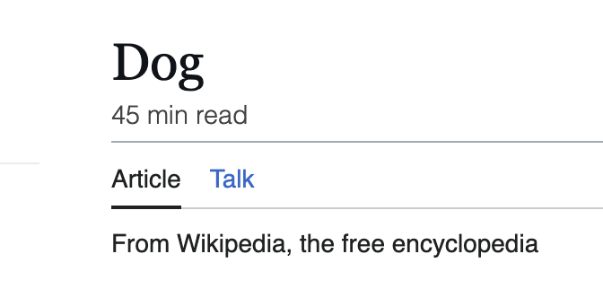

calculated with 300 words per minute(wpm) reading speed by default.
click extension icon to configure your reading speed settings.
This extension displays the estimated reading time of Wikipedia articles, giving you a rough idea of how long an article might take to read.
Get it on Chrome Githubcalculated with 300 words per minute(wpm) reading speed by default.
click extension icon to configure your reading speed settings.